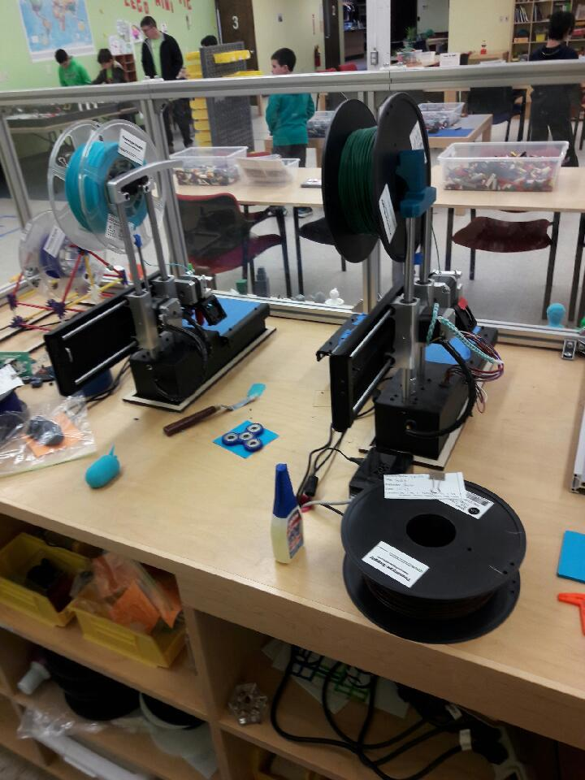

The Present of 3D Printing
3D printing has existed in a basic form for centuries, extending all the way back to 1982 (Beaman, 1). One of the earliest examples of 3D printing being used for mechanical reproduction was for the production of topographical maps, (Beaman, 1). This was done by a cartographer named Blanther, who used wax plates to build the positives and the negatives of escalation in his three- dimensional maps. This process was slowly built upon and improved over the 20th century. In 1974, Mitsubishi Motors made a big step forward with the technology by developing a method of creating 3D molds using a photo-hardening material (Beaman, 1).
A century later, 3D printing was first used for the rapid prototyping in design-heavy industries, and took hold initially at MIT, (3dprintingfromscratch.com). 3D printing has developed largely as a prototyping tool, though it is beginning to enjoy a wide variety of uses. Today, the most common application of 3D printing is known as material extrusion. This was invented by Scott Crump, and the process involves a nozzle creating layers of the thing being printed with a semi-liquid material, usually heated up from a solid state, (explainingthefuture.com). This, and the many other specific varieties of 3D printing, have uses including rapid prototyping, molds and tooling, digital manufacturing, and personal fabrication, (explainingthefuture.com).